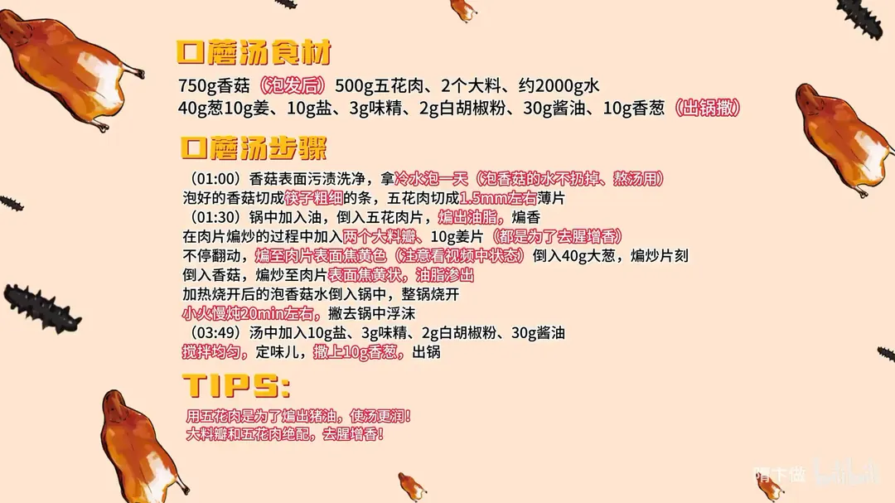

蘑菇汤
隋卞一做。干香菇 750g 用冷水泡一天，泡菇水留着煮汤；五花肉 500g 煸出猪油，加两个大料瓣、10g 姜片煸至焦黄，下香菇与泡菇水，小火炖 20 分钟，盐 10g 定味。
原视频：https://www.bilibili.com/video/BV1up421y7Lw
食材
香菇、五花肉、大料 等 11 样
| 类别 | 用料 | 用量 |
|---|---|---|
| 主料 | 香菇 | 750g（泡发后） |
| 主料 | 五花肉 | 500g |
| 配料 | 大料 | 2个 |
| 配料 | 葱 | 40g |
| 配料 | 姜 | 10g |
| 配料 | 香葱 | 10g（出锅撒） |
| 调料 | 水 | 约2000g |
| 调料 | 盐 | 10g |
| 调料 | 味精 | 3g |
| 调料 | 白胡椒粉 | 2g |
| 调料 | 酱油 | 30g |
步骤
- 泡菇切配：香菇表面污渍洗净，拿冷水泡一天，泡香菇的水不扔掉、留着煮汤；泡好的香菇切成筷子粗细的条，五花肉切成 1.5mm 左右的薄片。
- 煸五花肉：锅中加入油，倒入五花肉片，煸出油脂、煸香；煸的过程中加入两个大料瓣、10g 姜片，都是为了去腥增香；不停翻动，煸至肉片表面焦黄色。
- 下葱与香菇：倒入 40g 大葱煸炒片刻，倒入香菇，煸炒至表面焦黄、油脂渗出。
- 煮汤：把加热烧开后的泡香菇水倒入锅中，整锅烧开，转小火慢炖 20 分钟左右，撇去锅中浮沫。
- 调味出锅：汤中加入 10g 盐、3g 味精、2g 白胡椒粉、30g 酱油，搅拌均匀定味儿，撒上 10g 香葱，出锅。
小贴士
- 用五花肉是为了煸出猪油，使汤更润。
- 大料瓣和五花肉是绝配，去腥增香。
讲解要点
难度：★★☆☆☆（难点是把五花肉的猪油煸出来，还得煸到焦黄不糊）
为什么这么做
- 用五花肉煸猪油：汤要润、要香，全靠猪油；肉煸透了只剩一点肥肉片子，汤浓而吃着不腻。
- 大料瓣跟菇类特别融合：大料的香压得住肉腥，又和菌菇的香气合得上，做香菇鸡汤搁两个效果一样。
- 煸肉时下姜、不停翻动：姜把肉里的腥味盖过去，不停翻动让每片均匀受热，异味随热气带走。
- 泡菇水留着煮汤：香菇的鲜味大半溶在泡菇水里，倒掉等于扔了一半的鲜。
- 泡菇水加热后再倒进锅：冷水倒进热锅会骤降温，汤不容易滚起来，鲜味出得慢。
- 香菇切筷子粗：太细炖 20 分钟就烂成泥，太粗又不容易出味。
- 最后才调味：盐早放，肉和菇都会收紧，鲜味出不来；白胡椒压腥提鲜。
容易翻车
- 干香菇要用冷水泡透，头天晚上泡、第二天中午用；泡不开的菇炖出来是硬的。
- 五花肉要煸到表面焦黄、油脂渗出来，煸不到位汤不香，火大了又容易糊。
- 泡菇水底下有泥沙沉淀，倒的时候别一股脑全倒进去。
- 酱油只是补味，放多了汤色发黑、鲜味也被盖住。
- 用铁锅长时间熬菌汤多少会带铁味，能换砂锅或不锈钢锅更好。
热评补充
- 香信菇其实就是香菇，只是挑选规则和烘干工艺不同；买不到香信菇，用品质好的干花菇、干香菇一样能做。
- 宜宾有的店会加一点鱿鱼干进汤，鲜味更足。
原片尾卡

原片文案
AI 字幕校准稿
你们还记得这个菜吗？口蘑汤，真香，汤鲜到头了。这个口蘑就是你能想象到的最鲜的蘑菇，黏黏的，里面还有点肥肉片子，就这一点点肥肉，让蘑菇吃着又润了一点，汤喝着更香了一点。
从四川回来，我就一直在找这个蘑菇，终于被我找到了，这个叫香信菇。我们吃过的那个不一定就是这个品种，但香味相比来讲已经达到 90% 以上，就是这个味儿。今天这个方法用香菇也可以做，但肯定没有这个香。
这个香菇需要泡，用冷水泡就行。干的在泡之前，把表面脏的、带土的地方洗一下，头天晚上泡，第二天中午一做就挺好。切成筷子粗细的条就行了。
切点五花肉，切片就行。用五花肉就是为了用里面的猪油，这样的汤才能润，才能好喝。
锅里边放上底油，切好的五花肉片下进去煸。炒五花肉就是把油要给它炒出来，做汤的时候再吃，就没有那么油腻的感觉了。
然后里面放俩大料瓣，把姜也放进去，这样在煸炒的同时，会把肉里面的腥味盖过去。要不停地翻动，让各个肉片都均匀受热，不好的异味就随着飘走了。听着滋滋啦啦的，就是正在往外渗油脂。大料的味道跟菇类味道特别融合，也就是增香的作用，做香菇鸡汤搁俩大料瓣，那味儿就截然不同。
一会儿把葱也倒进去，闻一下没有腥臊异味，所以所有的香料要巧用、适量。蘑菇倒进去，泡进去之后拿勺子给它搅拌，然后把泡蘑菇的汤加热一下倒里边，再把它烧开。
烧开以后简单调个味儿。好了，到时间了，掀盖，加盐、味精、白胡椒粉，搅拌均匀，稍微定个味儿。嗯，这味道不太对，我加一点酱油，喝着跟那儿还有点区别，再来尝尝——好了，就这个味儿，可以了。
汤鲜到头了。刚才这个汤在煮的时候，我们公司所有人全进来，都在说在炖什么，好香啊。这个蘑菇真有点东西。在饭店做，怎么着也得放两倍到三倍的水。
也不太难，有手就能干的事。今天教这个不光是为了复刻，还包括怎么炒猪肉、怎么用猪油、怎么放八角，同样的方法做什么香菇汤、蘑菇汤都是通用的，而且这个汤做菌汤火锅绝了。